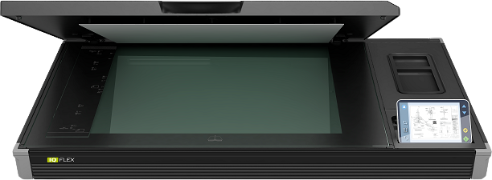
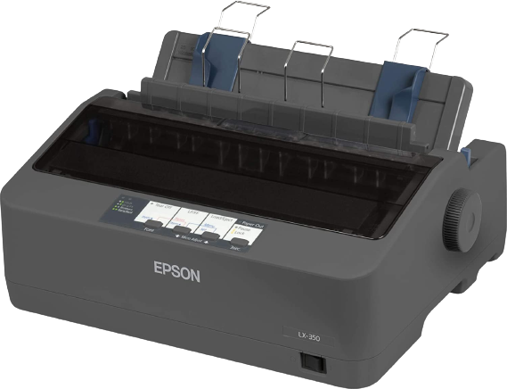
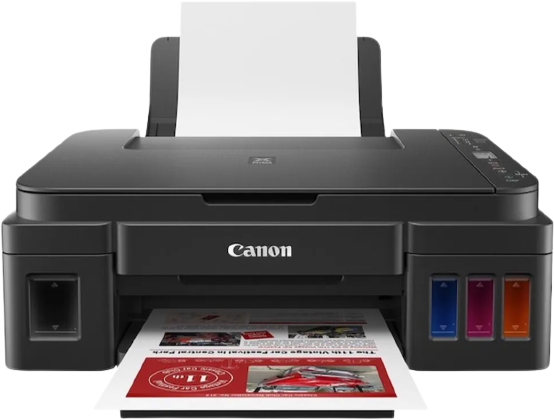

The printer is part of the category of output peripherals, it is used to transfer information from the computer to paper (a document, a picture or any other graphic file, an e-mail, an article, etc.). Printers are classified according to several criteria, for example according to the purpose (printing) and speed, the process, the maximum dimensions of the paper they print on and others.
Printers can print on paper of different sizes, from A0 — plotters only (larger size printers generally used by companies for CAD schematics, posters, etc.) to envelopes, photos, etc.
Printer types:
- Dot-matrix printer: (or "dot matrix") offers low quality; it is used for low quality sheets, tax invoices, etc. (generally type documents), being the only type of printer that allows simultaneous printing of 2 or 3 copies, using carbonless paper.
- Inkjet printer: provides medium to high quality at medium speed; is used for documents, photos or graphic files.
- Laser printer: offers high quality at high speed; use a special toner
- Thermal printing printer: uses a special paper; is used for identification cards, cards, etc.
In the field of computers, a scanner is an input peripheral unit, which scans optically (probes, sweeps, line by line and dot by point) analog images, printed texts or even real objects and produces a 2D digital image as a result. It is widely used in offices, most often in the form of a device to be placed on the work table, flat, with a glass "bed" on which the document or object to be scanned is placed.
The multifunction printer is actually an assembly consisting of a printer, scanner and copier. Modern MFPs are generally based on laser technology, but inkjets are just as prevalent, especially because of the price discrepancy.
|  |  |